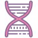

Awards & Recognitions
Golden Bear Award for Biology @ Warren High School  April 2022
This award is given out at my school at the end of each year to students—— selected specifically by their teachers——who portray success in their class and stand out. I was chosen to recieve the academic award by my science teacher in the subject of biology.
California Scholarship Federation @ Warren High School Since 2022
The California Scholarship Federation (known as CSF) is a state-wide academic honors organization whose purpose is to recognize students who have demonstrated outstanding academic achievement. CSF Membership is based on qualifying grades that are earned each semester.
Certificate in Scripps Research Digital Trials Center @ Scripps Research Center Sep 2023
The Scripps Research Digital Trials Center partners with world-renowned academic collaborators and technologists, industry partners, government organizations, participant partners and advisors, and farsighted benefactors. Throughout certification training, I learned about cutting-edge digital research studies. I also learned about the history of health research and the future of digital trials.